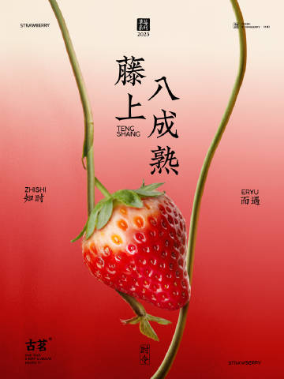
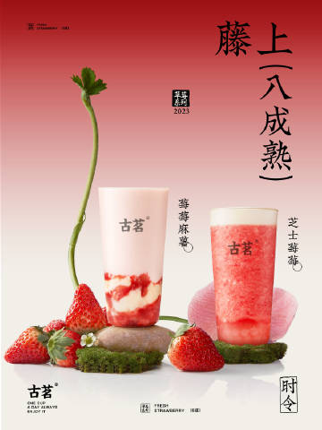

第六年「莓」好相遇，今日起全国陆续上新
选用当季藤上8成熟的草莓，不催熟，不早摘，果香浓郁，香甜可口
🍓莓莓麻薯
草莓果茸搭配软糯拉丝米麻薯，草莓的甜香和浓郁的奶香交织，层次超丰富，冷热皆宜
🍓芝士莓莓
新西兰奶油蛋糕酱带来纯正芝士香，融入甜醇咖啡中，带来更饱满的奶香，治愈冬日肃杀心情。
🍃落英红茶拿铁
甄选高山金牡丹红茶，原叶现泡，自带高扬花果香，浓香牛乳注入，茶香、奶香、咖啡香交织，口感层层叠进、渐次绽放。


选用当季藤上8成熟的草莓，不催熟，不早摘，果香浓郁，香甜可口
草莓果茸搭配软糯拉丝米麻薯，草莓的甜香和浓郁的奶香交织，层次超丰富，冷热皆宜
新西兰奶油蛋糕酱带来纯正芝士香，融入甜醇咖啡中，带来更饱满的奶香，治愈冬日肃杀心情。
甄选高山金牡丹红茶，原叶现泡，自带高扬花果香，浓香牛乳注入，茶香、奶香、咖啡香交织，口感层层叠进、渐次绽放。